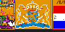
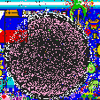
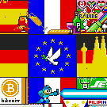

Three conflicts on the canvas
A border agreement broke down, a gaming community rebuilt its logo, and two flags gave way to a shared emblem. Follow each event through the canvas frames and the discussions happening alongside them.

The Armenian flag and the Dutch lionArmenian and GreyBlob participants agreed on a border. A Dutch coat of arms later covered both drawings.
The osu! logo, the streamer raid and the VoidA raid blackened the pink osu! logo. The Void claimed the attack, its own members argued about it, and the builders returned.
France, Germany and the EU flagGerman stripes crossed the French tricolour. Builders from both sides turned the disputed patch into a European flag.